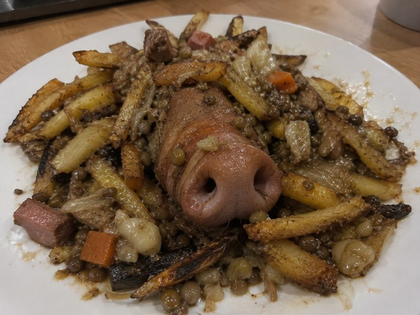

Ingredientes
| Producto | Cantidad |
|---|---|
| patatas | 4 |
| tomate triturado | 200 g |
| pimentón picante | 1 cucharadita |
| vinagre | 1 cucharada |
| aceite de oliva | al gusto |
| sal | al gusto |

Elaboración
- Corta las patatas en dados y fríelas hasta que estén doradas.
- Prepara la salsa cocinando el tomate con el pimentón, el vinagre y sal.
- Sirve las patatas calientes con la salsa por encima.